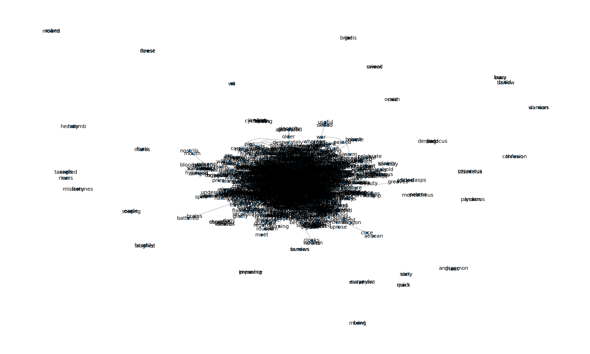
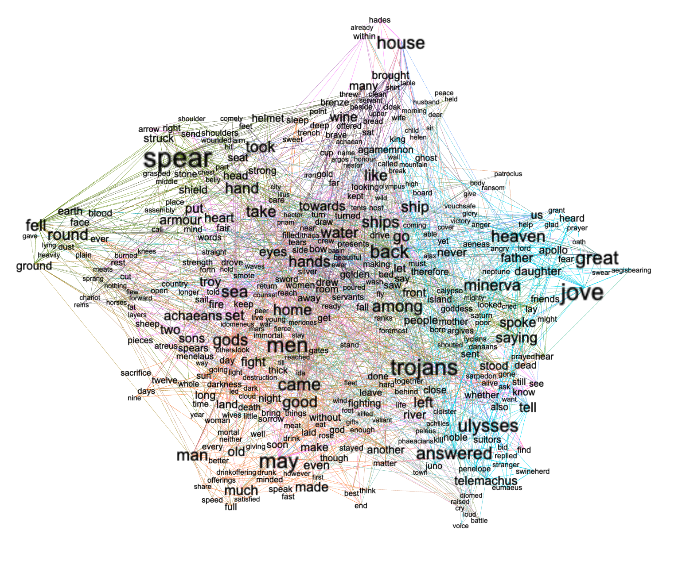
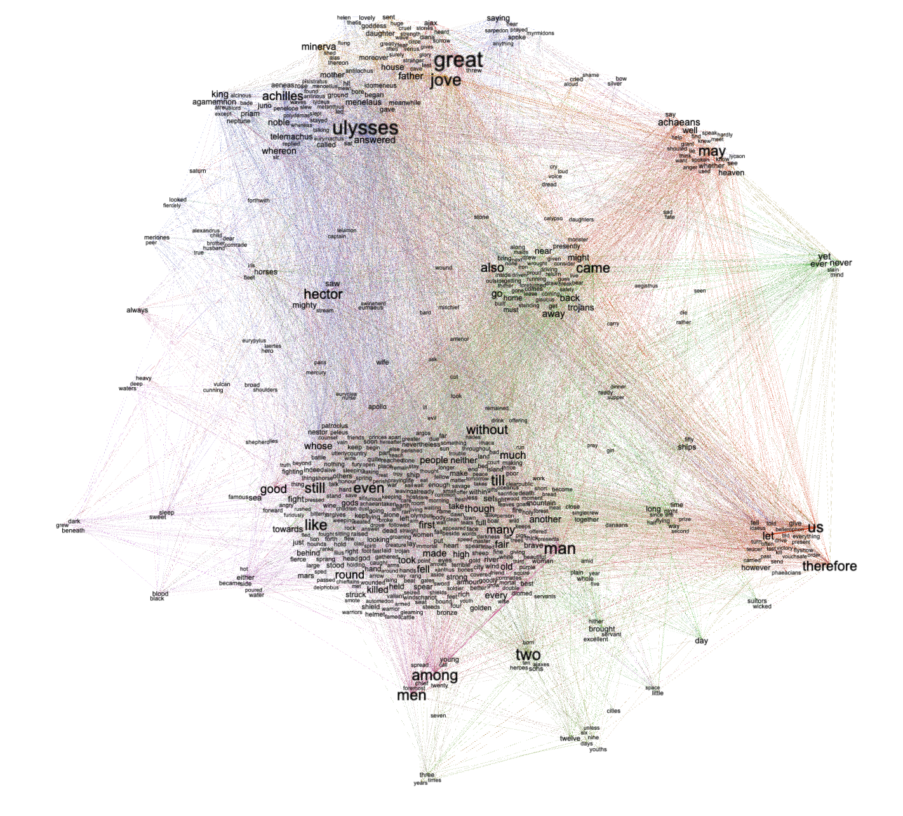
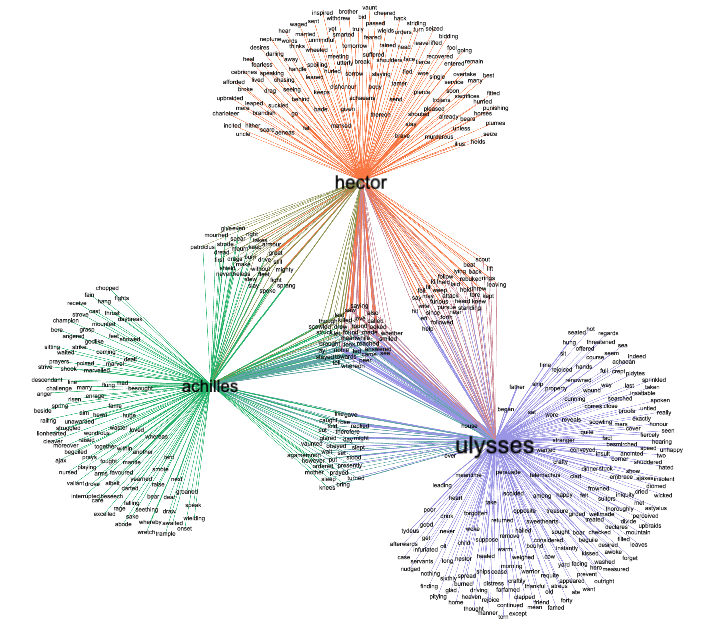

Exercise: Network graphs¶
Network diagrams illustrate relationships, and when it come to the Toolbox, network diagrams illustrate relationships between words. This section outlines some of the ways you can use the Toolbox to visualize these relationships.
At a minium, network diagrams – “graphs” – contains two things: 1) nodes, and 2) edges. Nodes are real world things, and one of the most common types of nodes are people. Edges denote relationships, and when it comes to people, some of the more common types of edges are friend, father, mother, sibling, or child. If you were to draw a number of dots on a piece of paper – each denoting a person, and you were to connect and label the dots with types of relationships, then you could easily see who is related to whom and how far away.
Since word are known by the company they keep, drawing dots on a piece of paper – each denoting a word, and then connecting the dots denoting proximity, we can beging to answer the question, “When a given word is used, what other words are used in conjuction?” A more complicated question can be, “When these people are mentioned, what verbs (actions) do they share in common?” In this way the student, researcher, or scholar can compare and contrast things (nodes).
Collocations¶
The simpliest, but also the least subtle, way to illustrate the relationships between words in study carrels is to exploit the collocationsl subcommand. For example, the following command will create a set of colloctions of all words in a carrel, and output a network graph:
rdr collocations homer
The result will look something like the following image, and at first glance the result is useless, but one can zoom into the graph and literally see relationships between words:
Gephi¶
Gephi is a cross-platform, open source piece of software excelling at interpreting network graphs as will as visualing them. Sure, the application requires a lot of practice, but it is full-featured and enables you to tell compelling stories. For example, the previous command can be augmented to output and/or export a specific network graph data structure called Graph Modeling Langauge (GML), like this:
# collocate all words and output a stream of GML
rdr collocations homer -o gml
# collocate all words, output GML, and save it to a file
rdr collocations homer -o gml > homer.gml
Once you create a GML file, you can open it in Gephi, apply any number of statistical mesures to it, filter the results, and finally come up with an illustration such as the following:
From the result you can see how words form themes as well as see what words have high statistically significance (words with high “betweeness” values). Thus, the result is a cross between an unigram word cloud and topic modeling. On the other hand, the result is not very targeted.
Bigrams¶
A simplier and more targeted approach to network digramming is rooted in bigrams.
Remember, graphs are denoted by nodes and edges, and the output of the ngrams subcommand is just that, a pair of nodes and a relationship (adjacency). For example, the following command will output a long list of bigrams from homer:
# output all bigrams
rdr ngrams homer -s 2
# output all bigrams to a file
rdr ngrams homer -s 2 > bigrams.tsv
The bigrams.tsv file (called an “adjacency file” in Gephi parlance) can then be imported into Gephi and visualized to look something like the following, but still, there is too much information here, and the resulting story is not compelling:
A much better approach is to apply a query (-q) to the ngrams command to only export bigrams containing specific words or regular expressions addressing your research question(s), such as this:
# query (filter) the ngrams command
rdr ngrams homer -s 2 -q 'achilles|hector'
# same as above but save the result to a file
rdr ngrams homer -s 2 -q 'achilles|hector|ulysses' > ahu.tsv
The resulting adjacency file (ahu.tsv) can then be imported into Gephi and visualized in the following manner:
The following outlines how you can create an illustration such as the one above.
Step #1
Step #2
Step #3
Documents and grammars¶
A very similar network can be illustrated by exploiting the grammars subcommand:
# query (filter) the ngrams command
rdr grammars homer -q 'achilles|hector|ulysses'
# same as above but save the result to a file
rdr grammars homer -s 2 -q 'achilles|hector|ulysses' > ahu.tsv
Step 1
Step 2
Step 3
Documents and keywords¶
Run some SQL:
# create an edges table of books and keywords
SELECT id AS 'source', keyword AS 'target' FROM wrd
Step 1
Step 2
Step 3